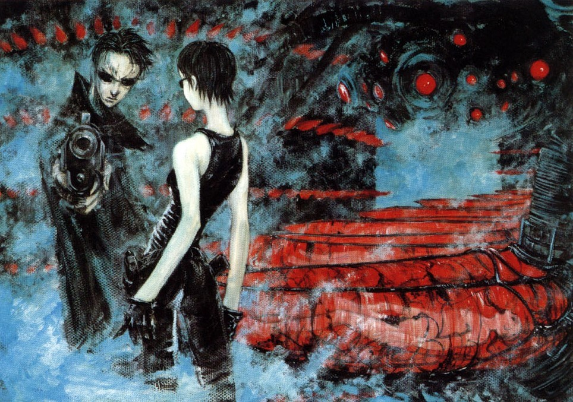

Passive Stake
UX/UI, Front-End, 3D Modeling
Passive Stake
Collborated with the co-founders of Passive Stake, a Fin-Tech startup, to research, design, and develop their online presence.
I’m a web developer with a love for Front-End, Back-End, UX/UI, 3D visualization, and poetry.
UX/UI, Front-End, 3D Modeling
Collborated with the co-founders of Passive Stake, a Fin-Tech startup, to research, design, and develop their online presence.